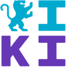
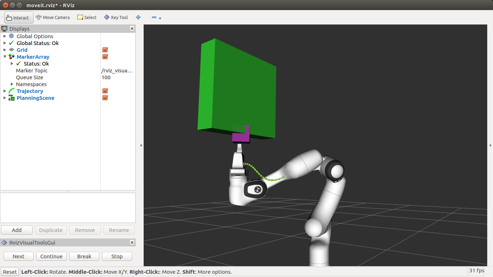

layout: true <div class="header"><img src="https://rosin-project.eu/wp-content/uploads/rosin_ack_logo_wide.png" style="background-color:transparent"/></div> <div class="footer"><img src="https://www.ipa.fraunhofer.de/content/dam/ipa/ipa.svg" /><p>© Fraunhofer IPA / This work is licensed under a Creative Commons Attribution 4.0 International License. Enhanced by: <a href="https://iki.rwu.de">iki.rwu.de</a> <p></p> </p> </div> <div class="triangle"></div> --- # MOVEIT  --- ## MoveIt Capabilities - Motion Planning - Generate high-degree of freedom trajectories through cluttered environments and avoid local minima - Manipulation - Analyze and interact with the environment with grasp generation - Inverse Kinematics - Solve for joint positions for a given pose, even in over-actuated arms - Control - Execute time-parameterized joint trajectories to low level hardware controllers through common interfaces - 3D Perception - Connect to depth sensors and point clouds with Octomaps - Collision Checking - Avoid obstacles using geometric primitives, meshes, or point clouds --- ## Timeline  --- ## Key Concepts   --- <img src="../static/moveit_pipeline.png" alt="Loc" style="height:600px" class="image-center"/> --- ## Key Concepts - **Robot State** - contains geometry information and joint values - **Current State Monitor** - update robot state by subscribing to `/joint_states` (provided by driver) - **Planning Scene** - collision checking and constraints checking - **Planning Scene Monitor** - updates planning scene through ROS interfaces - **Controller Interface** - planning trajectories published using [`FollowJointTrajectory`](http://docs.ros.org/api/control_msgs/html/action/FollowJointTrajectory.html) (consumed by driver) <!-- https://ros-planning.github.io/moveit_tutorials/doc/planning_scene_monitor/planning_scene_monitor_tutorial.html --> --- ## MoveIt configurations #### URDF - Universal Robot Decsription Format - safety controller - meshes used for collision checking - [UR5 description](https://github.com/ros-industrial/universal_robot/blob/kinetic-devel/ur_description/urdf/ur5.urdf.xacro) #### SRDF - Semantic Robot Description Format - Joint group (collection of joints and links) - as joints, links or serial chain - Virtual and passive joints - Robot poses - Self-collision - [UR5 SRDF](https://github.com/ros-industrial/universal_robot/blob/kinetic-devel/ur5_moveit_config/config/ur5.srdf) #### Other configurations - joint limits, kinematicas and motion planning plugins <!-- http://docs.ros.org/kinetic/api/moveit_tutorials/html/doc/urdf_srdf/urdf_srdf_tutorial.html --> --- ## Move Group <img src="../static/move_group.png" alt="Loc" style="height:500px" class="image-center"/> --- ## MoveItCpp API ```cpp // Create the MoveIt MoveGroup Interface using moveit::planning_interface::MoveGroupInterface; auto move_group_interface = MoveGroupInterface(node, "arm_torso"); // Set a target Pose auto const target_pose = []{ geometry_msgs::msg::Pose msg; msg.orientation.w = 1.0; msg.position.x = 0.5; msg.position.y = 0.3; msg.position.z = 0.5; return msg; }(); move_group_interface.setPoseTarget(target_pose); // Create a plan to that target pose auto const [success, plan] = [&move_group_interface]{ moveit::planning_interface::MoveGroupInterface::Plan msg; auto const ok = static_cast<bool>(move_group_interface.plan(msg)); return std::make_pair(ok, msg); }(); // Execute the plan if(success) { move_group_interface.execute(plan); } else { RCLCPP_ERROR(logger, "Planning failed!"); } ``` --- ## Collision Objects MoveIt supports collision checking for different types of objects including: - Meshes - you can use either .stl (standard triangle language) or .dae (digital asset exchange) formats to describe objects such as robot links. - Primitive Shapes - e.g. boxes, cylinders, cones, spheres and planes - Octomap - the Octomap object can be directly used for collision checking Updating / deleting collision objects: #### ADD - Same id → object is updated - Different id → new object #### REMOVE - deletes the object --- ## Collision objects in C++ ```cpp // PlanningSceneInterface for adding/removing collision objects moveit::planning_interface::PlanningSceneInterface planning_scene_interface; // -------------------------------------------------------------- // Create a box collision object // -------------------------------------------------------------- moveit_msgs::msg::CollisionObject collision_object; collision_object.header.frame_id = "base_link"; // or "base_link" depending on your robot collision_object.id = "box1"; shape_msgs::msg::SolidPrimitive primitive; primitive.type = primitive.BOX; primitive.dimensions = {0.4, 0.2, 0.1}; // x, y, z size in meters geometry_msgs::msg::Pose box_pose; box_pose.orientation.w = 1.0; box_pose.position.x = 0.6; box_pose.position.y = 0.0; box_pose.position.z = 0.2; collision_object.primitives.push_back(primitive); collision_object.primitive_poses.push_back(box_pose); collision_object.operation = collision_object.ADD; ``` --- ## Attach Collision Object to Robot <p></p> --- ## Attach Collision Object to Robot ```cpp // ------------------------------------------------- // Attach it to a robot link // ------------------------------------------------- moveit_msgs::msg::AttachedCollisionObject attached_object; attached_object.link_name = "ee_link"; // link to attach to attached_object.object = object; attached_object.touch_links = { "ee_link", "wrist_link", "gripper_link" }; RCLCPP_INFO(node->get_logger(), "Attaching object..."); planning_scene_interface.applyAttachedCollisionObject(attached_object); ``` - **object** - Name of the desired collision object - **link_name** - Name of the link the collision object should be attatched to - **touch_links** - List of links the object is allowed to collide with (e.g gripper fingers etc) --- # Thank you!